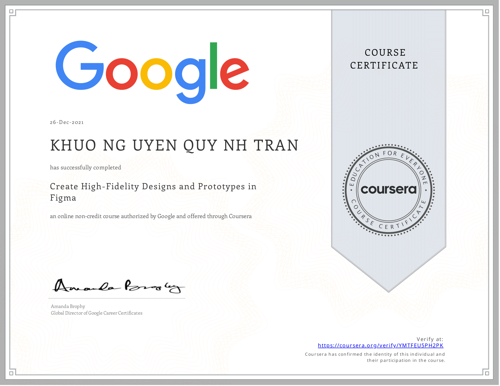
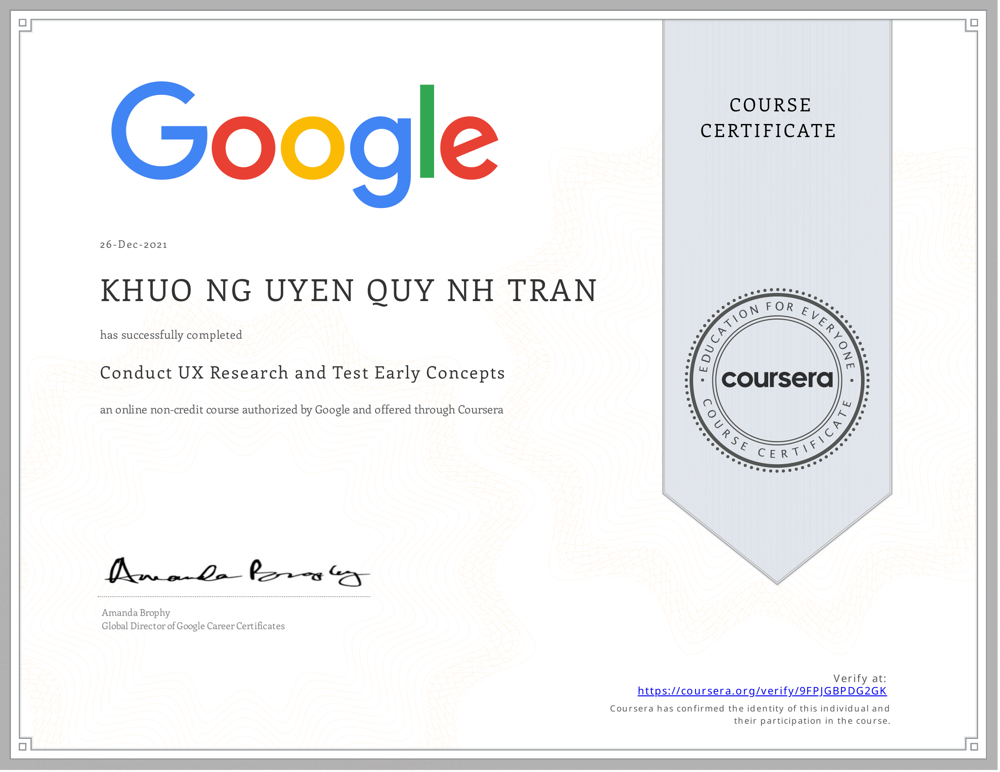
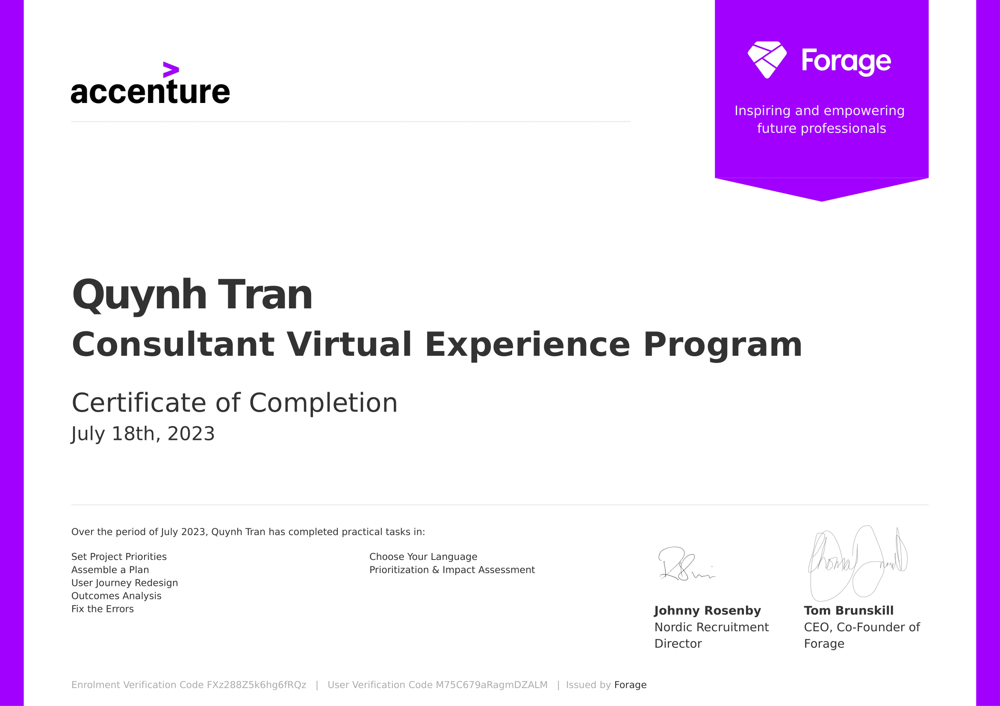
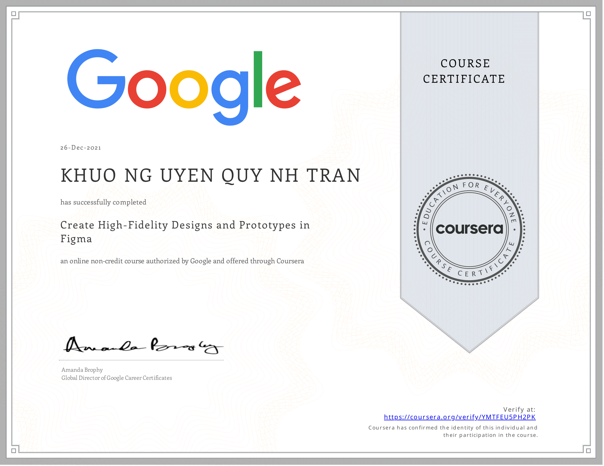
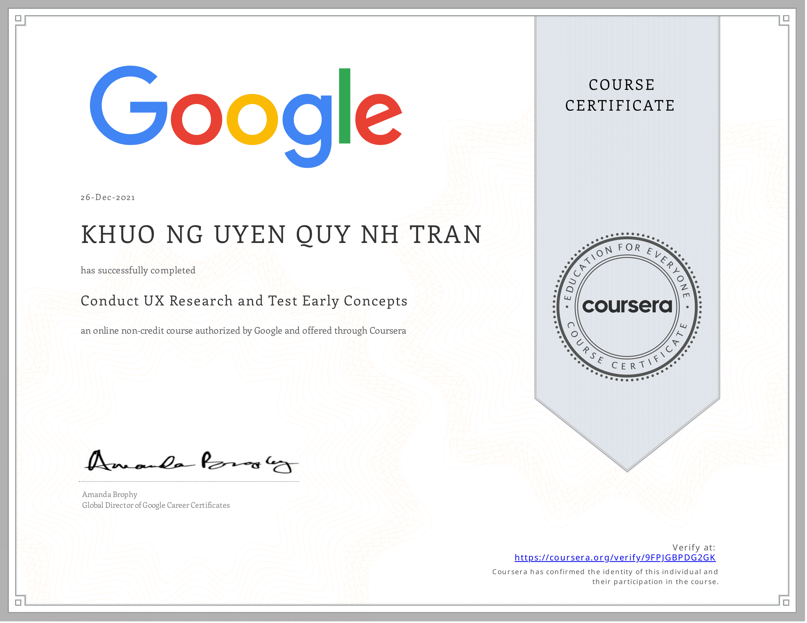
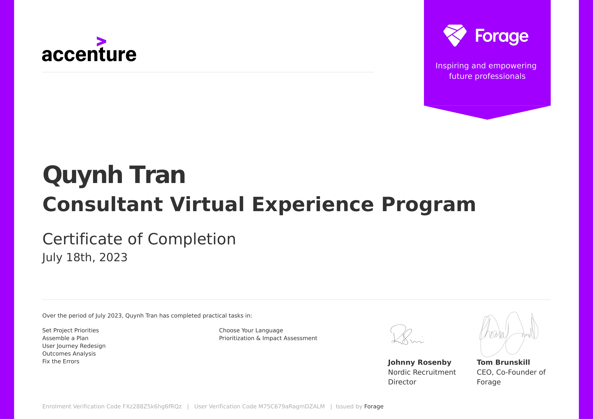

About me
Me and my older brother next to the computer table
I was born in Hoi An, Da Nang, a central beach city of Vietnam. Back then, Vietnam was still a very poor country, and my family's life reflected that reality. We lived in a tiny, bare house. Yet, in that simple home, there was one treasure: A computer my father bought for work.
To me and my older brother, it was a window to the outside world. That computer became our playground, library and source of endless curiosity.
Time has flown faster than I could have imagined. Technology has transformed the world, and now AI is growing smarter every day. Sometimes, I look around and can hardly believe I am living in an era my younger self would never have dreamed possible.
Over time, I have come to appreciate learning not just for personal growth but as a powerful tool to benefit others. This passion drives me to explore inclusive education and the intersection of technology and social good — using design and innovation to turn knowledge into meaningful, positive impact.
Education is the key to unlocking the world, a passport to freedom.
Oprah Winfrey
Outside the work, I'm a part-time entrepreneur when I craft handmade things for selling in the market, devoted in sustainability and secondhand fashion. A day-dreamer and sometimes, a amateur photographer. I love to travel, explore new cultures, and capture the beauty of life through my lens.

Me selling in a market hall convention in Finland
Sunset on the beach, credit: Quynh Tran
Aurora night, credit: Quynh Tran
Bird returning the nest, credit: Quynh Tran
Berlin day, credit: Quynh Tran

 




